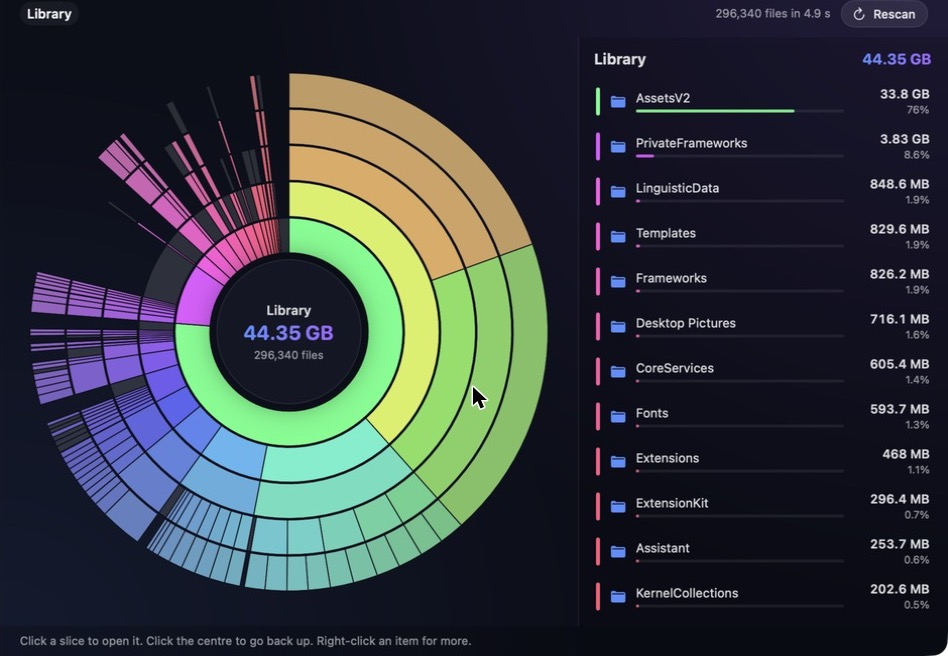
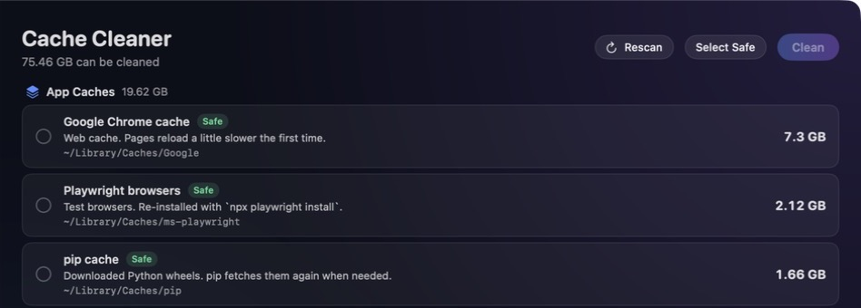

A free disk analyzer and cache cleaner. It scans the whole disk in seconds.
Download for MacmacOS 14 or later · Apple silicon and Intel · 1.4 MB

Every cache is labelled with what it is and whether it is safe to delete.

Docker, Homebrew, simulators, snapshots. One click copies the command.